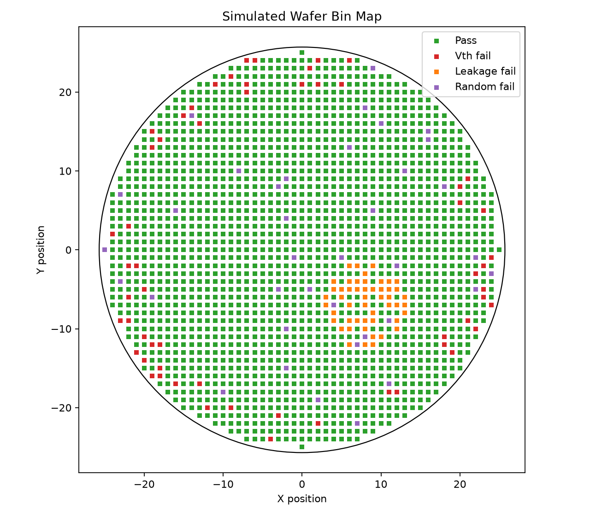

稳定投入比突击更重要
专科零基础 · 存储芯片主线
从“什么都不懂”
走到半导体技术岗位
一条现实、可执行的3至5年路线：先进入设备、制造、测试或失效分析岗位， 再用现场经验和数据能力向工程岗位发展。
学习原则
先能解释→再能计算→最后验证
YOUR PATH
MEMORY
DRAM · NAND · TEST
01
基础知识
02
工具项目
03
进入行业
让能力有证据可展示
先入行，再向工程岗位移动
当前进度
0 / 12 周
3至5年路线
每一步都留下可验证结果
不追求一开始就成为器件设计工程师。先建立行业入口能力，再用工作经验完成跃迁。
0–1年
PHASE 01
补齐基础
数学、物理、电路、MOS管、Python和基础英文。
- 解释DRAM与NAND原理
- 完成RC实验与数据绘图
- 安全使用基础仪器
1–2年
PHASE 02
进入专业
晶圆工艺、存储器结构、测试、SPC和失效分析。
- 制作wafer map与控制图
- 理解光刻、刻蚀、沉积
- 掌握CPK、8D与DOE
2–3年
PHASE 03
形成作品
完成三个可复现项目，开始针对性申请入口岗位。
- DRAM保持时间仿真
- 晶圆良率数据分析
- NAND与MLCC失效案例
3–5年
PHASE 04
完成跃迁
从现场岗位转向测试、良率、产品、FA或助理工艺。
- 建立一项现场专长
- 积累量化改善成果
- 争取内部转岗机会
立即执行
前12周，建立第一个正反馈
点击每周卡片标记完成。进度只保存在你的浏览器，不会上传。
求职证据
三个项目，胜过一串“了解”
每个项目都包含问题、数据或假设、可复现步骤、结果解释和局限性。
PROJECT 01 · 已可运行
晶圆良率分析
用Python处理1,961个模拟die，生成wafer map、bin分布、阈值电压直方图和CPK报告。
92.61%总良率
0.934Vth CPK
4Bin分类
查看分析报告 →

DRAM保持时间仿真
通过LTspice观察存储节点放电，理解电容量、漏电与刷新周期的关系。
- RC时间常数
- 漏电对比
- 波形测量
8D失效分析
完成NAND编程失败与MLCC绝缘下降案例，训练根因验证思维。
- 问题定义
- 对照实验
- 防止再发
现实职业路径
第一份工作不是终点，
是进入产业的入口
暂不提升学历时，把目标放在能接触设备、测试数据、异常处理和质量方法的岗位。
ENTRY入口岗位设备 · 制造 · 封测
→
GROW现场专长数据 · 排错 · 改善
→
TARGET工程岗位测试 · 良率 · FA · 工艺
最终竞争力
形成自己的能力组合
单点知识很容易被替代，现场、数据、专业和表达能力组合起来才有价值。
现场专长
设备、测试或失效分析，至少有一项能够独立操作与排错。
数据能力
Excel、Python、SQL、SPC与DOE，把异常转化为可分析的问题。
专业知识
MOS器件、DRAM/NAND结构，以及完整的半导体制造流程。
交叉优势
MLCC、封装供电与电容失效，为先进封装方向留下接口。
技术英文
能阅读datasheet、设备手册、测试条件与基础英文资料。
今天不需要懂完整个半导体行业。